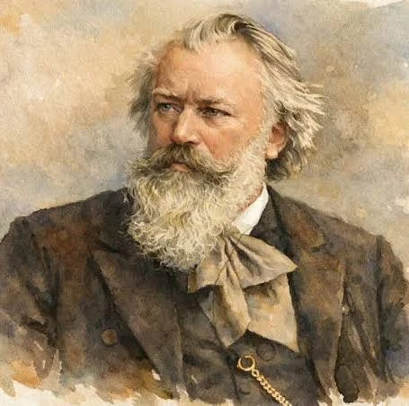

1833 – 1897 · Komponist der Romantik

Johannes Brahms gehört zu den bedeutendsten Komponisten des 19. Jahrhunderts. Sein Vater war selbst Musiker und brachte ihn schon früh mit Musik in Kontakt. Brahms verband die Gefühlstiefe der Romantik mit der strengen Form der Klassik – deshalb gilt er bis heute als einer der ganz Großen, der „drei B“ der Musik: Bach, Beethoven und Brahms.
Johannes Brahms wird am 7. Mai in Hamburg geboren. Sein Vater ist ebenfalls Musiker.
Der erste Klavierunterricht beginnt.
Brahms tritt zum ersten Mal öffentlich als Pianist auf.
Er lernt Robert Schumann kennen, der sein Talent erkennt und ihn unterstützt. Mit Schumanns Frau Clara verbindet ihn eine enge Freundschaft.
Brahms zieht nach Wien, wo er viele Jahre lebt und arbeitet.
Am 3. April stirbt Johannes Brahms in Wien.
Sein großes Chorwerk – es machte ihn europaweit berühmt.
Brahms arbeitete viele Jahre daran, bevor er sie veröffentlichte.
Temperamentvolle Stücke, die bis heute oft gespielt werden.
Eines seiner bekanntesten Stücke – ein Schlaflied, das viele Menschen kennen.
▶ AnhörenWichtig: Viele Lieder werden von anderen Musikern gespielt, aber Melodien und Texte sind dieselben wie von Brahms.